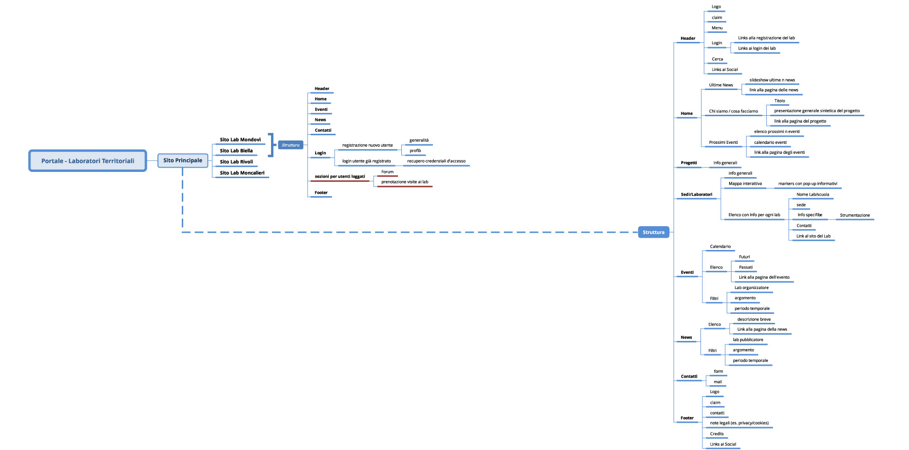
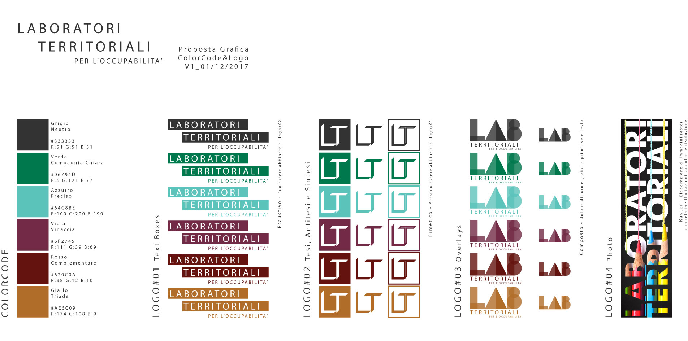

Laboratori Territoriali website
digital communication for regional project
The Laboratory Territoriali per l’Occupabilità is a high school laboratories' network for the "Made in Italy" education and the inclusion of youth in the world of work. Founded by Italian Ministry of Education, Universities and Research.



Field: Production
Categories: Website, Communication
When: 2018
Workplace: LINKS Foundation
Link: Laboratori Territoriali
Methodology: Agile
Main Tools: mind map, Axure RP, Wordpress, Adobe CC, web frontend code
My responsibilities
- Information Architecture, Interface and Graphic Design
- Creative director
- Frontend technical management
Lesson Learned
Working in a multidisciplinary team with managerial and educational experts